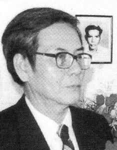
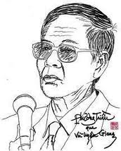

Chương Chín

a Đéc là một tỉnh nhỏ xinh xinh nằm bên bờ Sa Giang êm đềm, một phụ lưu của dòng Tiền Giang. Tôi không nghĩ rằng đây là một chốn địa linh nhân kiệt. Nhưng về nghệ thuật sân khấu, nữ nghệ sĩ Năm Sa Đéc được vang danh khắp Nam Kỳ Lục Tỉnh. Bà nổi danh từ bộ môn hát bội, rồi hát cải lương, sau hết là ở lãnh vực thoại kịch và điện ảnh. Bà là kiện tướng của nghệ thuật trình diễn không nhờ thanh sắc mà ở nghệ thuật diễn xuất. Nhắc tới bà, chúng ta nghĩ tới nữ nghệ sĩ Françoise Rosay của Pháp, hay nữ nghệ sĩ Marguerith Rutherford của Anh, Judith Anderson của Mỹ. Và ngoài ra, vào đầu thế kỷ 20 có 2 tay kiện tướng khoa bản như Luật sư Trần Ngươn Hanh, Kỷ sư Lưu văn Lang (xuất thân từ trường Đại Học Bách Khoa Trung Ương tại Pháp). Về văn chương trước năm 1975 có Sa Giang Trần Tuấn Kiệt nổi tiếng về thơ. Bên văn xuôi có chị Linh Trang (tác giả tập truyện Mưa Chiều) và Phương Triều. Nhưng lúc đó công việc sáng tác của họ chỉ như hoa chớm nụ, trăng vừa tròn gương. Cả hai chỉ tung hoành bên báo chí nhiều hơn.

Vận nước đổi thay, cơ trời xoay chuyển. Khi ra hải ngoại, bên văn xuôi, hai nhà văn gốc tỉnh Sa Đéc là Nguyễn văn Ba, nữ sĩ Tiểu Thu tung ra những tập truyện viết về phong tục trên đất nước quê hương với bút pháp dí dỏm nồng mặn. Còn Phương Triều bắt đầu khởi sắc ở nghệ thật sáng tác thi ca. Bởi anh không cộng tác với các báo văn học nổi tiếng như Văn, Văn Học, Thế Kỷ 21, Khởi Hành v.v... nên không đuợc giới sành điệu biết đến nhiều.
Văn nghiệp của Phương Triều gồm có: Còn Nhớ Còn Thương (tập truyện, 1966), Tiếng Hát Hoàng Hôn’(tập truyện, 1966), Sầu Hương Phấn’(tập truyện, 1972), Thơ Phương Triều’(thi tập, 1995), Trăm Bài Thơ Xuân’(thi tập, 2000), Xóm Mộ’(thi tập, 2001), Giọt Sữa Đất’(thi tập, 2002). Và sau hết là Xương Rồng Đen (thi tập, 2004).
Xếp lại tập thơ Xương Rồng Đen, tôi bất đầu ngáp dã dượi. Không phải tôi không thích thú khi đọc nó. Không phải tôi chán ngấy với cái ý tình huyền bí mông lung của anh. Không phải thơ anh không mở cho tôi một cánh cửa, một lối đi, một dòng sông để tôi viễn du vào trong đó. Tôi chỉ sợ khi bình thơ anh, tôi không đủ khả năng diễn tả cái cảm nhận của tôi đối với thơ anh.

Những bạn văn của tôi như 2 nhà thơ nữ Thụy Khanh, Nguyễn Thị Thanh Bình và anh Vũ Tiến Lập có cho tôi biết Phương Triều là một trong các nhà thơ trội nhất trong các nhà thơ gốc Nam Kỳ hiện định cư khắp bốn phuơng trời hải ngoại. Anh dù không thể song hành với Trần Tuấn Kiệt, Tô Thùy Yên khi còn ở trong nước, nhưng anh vẫn bước vào loại thơ có lác đác một vài tư tưởng mà vẫn giữ nguyên vẹn vóc dáng và cốt tủy của thơ. Anh không có sở tri thâm hậu về Phật pháp như Võ Chân Cửu qua các tập thơ Đại Mộng’và Thảng Lai Thi, không thuần túy sáng tác loại thơ bề ngoài là Trử Tình Ca, nhưng bên trong chói rạng tinh thần Bát-nhã chẳng hạn như Như Chi Lê Thị Hiền (qua thi tập Thơ Hiền). Tuy nhiên, thơ anh vẫn phảng phất bóng dáng tư tưởng về cái ảo ảnh của cuộc phù thế, về cái khao khát niềm hạnh phúc vĩnh cửu của con người qua thơ của Ngô Nguyên Dũng, của Đặng Thị Quế Phương.
Có một điều đáng nói là các thơ gốc Nam Kỳ là Phan Ni Tấn và Lâm Hảo Dũng dù không phải là thơ tư tưởng mà là thơ cảm hoài, nhưng thơ của cã hai phản ảnh được tâm trạng thế hệ của một lớp người khổ đau, chịu nhiều hệ lụy, chứng kiến biết bao cảnh tang thương và chịu nhiều mất mát về phương diện tinh thần. Cũng vậy, cái đề tài của thơ Phưong Triều cũng không thoát ra ngoài cái quỹ đao của hai anh Phan, Lâm để tạo cho mình một cương vị sáng sủa trong thi giới. Một lẽ dễ hiểu: anh đã từng sống đọa đày dưới chế độ mới, đã nghiệm chứng được cái đau khổ của con người mình bị tướt đoạt, đã chứng kiến mọi giá trị tinh thần bị cơn bão thời đại làm sụp đỏ. Anh cũng đã đau khổ vì mọi cái quý báu của lý tưởng, của những giấc mưa vừa chớm hình thành mà vẫn chưa có cơ hội nào thực hiện nổi nên đành bị dập tắt một cách tức tưởi. Riêng thi tập Việt Nam Thương Khúc’của Kiệt Tấn là một tác phẩm của dân tháp ngà học đòi làm giang hồ kiếm khách, làm chiến sĩ xông pha trước mũi đạn lằn tên. Đương sự chỉ dùng lối thơ song thất lụcbát viết lại những thảm trạng trên quê hương qua các sách vở, chớ không có dịp dấn thân vào cuộc sống vào thời giông bão nhiễu nhương. Đó là đương sự làm thơ qua đống tài liệu chết, qua những câu truyện truyền khẩu dược tượng trưng bằng những cái xác ướp lâu đời trong các ngôi cổ mộ. Đã vậy, ngôn từ của thơ anh ta ít có công phu sáng tạo, ngôn ngữ thơ thiếu chất men quyến rũ. Tập thơ này thua xa tác phẩm đầu tay rất dễ thương của đương sự là tập thơ Điệp Khúc Tình Yêu Và Trái Phá’’.
Trở về thi tập Xương Rồng Đen, trong số chúng ta sẽ có ngưòi tự hỏi: Những tư tưởng nào mà được Phương Triều đưa vào thơ? Triết lý hiện sinh hay triét lý nhân bản? Phật pháp hay triết học Lão Trang?’Thật khó xác định được. Thơ anh bàng bạc nhiều thứ tư tưởng triết học lẫn tâm linh, không có tư tưởng nào rõ nét và kéo dài tràng giang đại hải. Có như thế tư tưởng trong thơ anh khỏi trở thành một thứ vay mượn lộ liễu. Song moi tư tưởng anh đi vào thơ không nhắm vào cái rối reng khuc khuỷu của hiện tượng, mà như những mũi tên nhắm vào bản thể hiện hữu. Nếu nhà văn hay nhà thơ cứ đào xới cái uyển chuyển, cái éo le, cái phức tạp của hiện tượng thì chỉ có thể khai thác những nhân sinh quan của mình. Đi vào bản thể, người cầm bút mới đào sâu vấn đề triết học và tư tưởng tâm linh.
Chúng ta thử đọc bài khai đề cùng tựa với thi tập của Phương Triều: Hoa Xương Rồng Đen’’:
Bụi xương rồng trong chậu
Nở được nụ hoa đen
Mong đợi kẻ thắp đèn
Soi mặt mình hớn hở!
°
Mùa đông tưới nước sôi
Mùa hè dội nước đá
Hoa xương rồng nghiêng ngả
Theo vận đời nổi trôi...
°
Buổi tối ma vương về
Nhìn quanh cuời hả hê
Gai xương rồng có thật
Nhưng hoa là cơn mê!
(trang 3)
Đây có phải là bản tuyên ngôn ẩn núp sau bài thơ giáo đầu cho ý tình trong toàn thể thi tập chăng? Hoa đen chỉ là cơn mê biểu tượng cho cái gi và điều gì? Gai nhọn có thật thì lại được ẩn dụ cho cái gì và điều gì? Có phải chăng cuộc đời dưới ánh sáng Bát-nhã của nhà Phật là cơn đại mộng dẫy đây hoàn cảnh đen tối để trở thành ác mộng đói với kẻ lún sâu vào cơn mê lầm? Cuộc đời vốn là huyễn mộng Và bởi nó là mộng nên các chúng sinh mới thấy nỗi đau khổ, mọi tai ương hoạn nạn (những gai độc đấy! ) đều là có thật.
Trong thi tập Xương Rồng Đen, tư tưởng nhà Phật bảng lảng ở rất nhiều câu thơ hoặc ở nhiều đoạn trong bài thơ. Tác giả không đè đầu đè cổ Phật pháp để ép uổng chúng vào thi ca đâu. Một khi ngọn bút anh nở hoa, bóng Phật và bóng Bồ-tát nuờm nượp hiện về. Dù là cái bóng, dù dưới thiên hình vạn trạng khác biệt nhau đều sản sinh từ một thực thể cả.
Xuôi mút dòng sông chưa thấy biển
Nghe chừng chân trợt hóa hư vô
Lỡ tay moi hết từng mê hoặc
Từ đáy hồn reo tiếng bão xô!
°
Rót bao nước đủ cho đời khát?
Rửa mât hiền nhân đặc sáp khô
Kéo thêm chỉ nối diều hoan lạc
Dẫu một trùng dương cũng hải hồ!
°
Cho chút trăng xưa về bến cũ
Mắt già thôi lạnh nếp khăn sô
Tiếng ai ầm ỉ ngày chiêu niệm
Còn chút từ tâm cũng ý đồ!
°
Ghé qua hương gió cười xanh mộng
Ngọn tóc hài nhi nắng nhấp nhô
Đời bắt đầu dư năm tháng lạnh
Như đời có thật giữa hư vô!
(Có Thật, trang 57)
Cái mà chúng ta thấy biết qua năm giác quan, qua khái niệm chỉ là cái thấy biết dựa trên cái vô thường huyễn hoặc. Cho nên tác giả hoài nghi những khuôn mặt thánh hiền chỉ là cái mặt nạ bằng sáp. Con người vốn có dục vọng to tát và bất tuyệt thì làm sao họ nắm bắt sự thật tuyệt đối. Ngay cả cái chút từ tâm của con người chưa chắc phải là lòng bác ái chân thật mà là một ý đồ cầu danh hay cầu lợi gì đó. Cuộc đời ở cõi Ta bà nầy không phải là cái có thật tuyệt đối vì trong sắc có không, trong không có sắc (như đời có thật giữa hư vô). Nếu hiểu được như thế, chúng ta mới có thể khởi hành vào chứng ngộ.
Lộn đêm thành giấc ngủ ngày
Kéo theo bóng mộng mệt nhoài giữa trưa
Nắng vàng chưa kịp xanh dưa
Đã rơi rụng xuống chỗ vừa mưa qua!
°
Mời trăng ngủ nán hiên nhà
Tiếng thơ thủy mạc hương trà thủy tiên!
°
Bút đâu vấy mực hảo huyền
Vung tay vẽ lối đào nguyên kẹt đường!
Xe đò chạy sớm tinh sương
Bồn binh kẻ chợ thảm thương vật vờ
°
Lạc từ ngọn cỏ phất phơ
Từng con bướm mộng bơ vơ giữa đời...
(Bóng Mộng, trang 8)
Bài thơ nói lên cái trái trắc đảo điên trong cuộc sống Trong cõi phù du nhốn nháo và trái trắc đó, có những điều chưa kịp thành hình mà phải chịu cảnh dập tắt một ách tức tuởi (Nắng vàng chưa kịp xanh dưa’/ Đã rơi rụng xuống chỗ vừa mưa qua). Ở đây chúng ta có thể nghĩ đén những con người chưa kịp trưỏng thành mả phải yễu mệnh chết non. Và cũng trong cõi ấy, mọi thưởng ngoạn, mọi sáng tác của người nghệ sĩ cũng trở nên huyễn hoặc và sa vào ngõ bí (xin đọc phân đoạn thứ 2 của bài thơ). Nhưng dù có bị đưa đẩy bởi nghiệp lực như ngọn cỏ phất phơ trong gió, con người vẫn cứ mộng, chưa thúc tỉnh để nhận diệni cái bản lai diện mục của hiện hữu (xin đọc hai câu cuối của bài thơ).
Từ đó vong thân vào nghiệp chướng
Mặt đời ràn rụa bóng chiêm bao
Đêm đen tròng mắt ngày râu trắng
Từng lớp môi khô bật máu đào.
°
Xúm nhau diễn tới cùng im lặng
Rồi bật cười như mới được đau!
Neo hồn thương tích vào thương tật
Rồi lại buồn như chẳng thể nào....
(Nẻo Hồn, trang 85)
Như thế, còn mê là còn trầm luân trong bể khổ. Đây là hồi chuông cảnh tỉnh gióng giã của Đức Phật đưa con người tránh khỏi Neo hồn thương tích vào thương tật / Rồi lại buồn như chẳng thế nào...’’.
Con người nếu có cuộc sống bình ổn, nếu mọi ao ước của ai đó được thực hiện bằng cách này hay cách khác, đương sự thường săn tìm những mộng ước mới. Y ta không có thời giờ nhìn sâu vào những hiện tượng của mọi hiện hữu trong cuộc đời huống hồ là cái bản thể chung của mọi hiện tượng. Chính những con người đau khổ mới có dịp tư duy, mới có dịp nhìn sâu vào những hiện tượng tiêu cực của đời sống: những tai ương, những đau khổ, những tan vỡ của mọi ước vọng, những tranh chấp và mâu thuẩn trong xã hội, cái phù du huyễn hoặc của kiếp nhân sinh... Do dó, họ tìm tòi ra cái nguồn gốc tiêu cực lẫn tích cực chung của vạn hữu. Từ đó, vấn đề tâm linh và vấn đề triết học mới được họ quan tâm.
Ở truờng hợp Phương Triều, dưới chánh thể Việt Nam Cộng Hòa ở Miền Nam Việt Nam, anh sống tương đối thoải mái. Nhưng sau cuộc đổi đời kể từ sau ngày 30/ 4/ 1975 cho tới khi ra hải ngoại, cuộc sốngcủa anh đã trở thành khổ ải lầm than. Anh mới có dịp nìn sâu vào cái góc rễ của niềm bất hạnh mình, cái trầm luân của nhân sinh. Dù có tiếp xúc với 2 bộ môn triết học và tâm linh hay không, anh vẫn phải tìm cho mình một hệ thống nhân sinh quan nào đó để trực diện với hoàn cảnh mới, để đương đầu với mọi trắc trở truớc một cuộc sống tối đen đầy cạm bẫy. Do đó, thơ anh không còn đơn giản và thấm ướt mạch trữ ình lãng mạn nữa. Nó lột xác thành một loại thi ca có chiều sâu hun hút, choáng ngợp cái bí nhiệm của cuộc sống.
Khi giấc ngủ không còn mộng được
Trái trời xanh rụng trắng mặt đêm hoang
Tiếng trống vọng xôn xao vào ngõ ruột
Vỗ hồn khon thảng thốt gọi trăng tàn!
°
Cuối lưu vực sỏi chao dòng nghịch thủy
Vác nhục nhằn sông lặng xuống đa mang
Tay cõi thế nối mưa vào đọt nõn
Bởi kỳ dư gốc gác đẫm sương tan!
°
Tay vấy đậm những lần rơi rớt vụn
Người vô tư ngồi giữa mộng vô vàn
Miếng vinh nhục mấy khi mà lơ láo
Chút dây thòng sao thắt đủ nghiệt oan?
°
Tiếng trống chợ tưỏng đâu mùa tựu học
Cắt trầm luân chia đủ giọng rao hàng
Ông Tám hôm qua bà Ba bữa trước
Tắm rửa bao lần chưa tới được cao sang!
°
Chơi bản ruột sao đờn theo trật ý?
Rớt nhịp mơ hồ sao cất giọng lên ngang?
Bao tội vạ đổ lên đầu tội nghiệp
Nước sông đầy sao đáy ruộng khô khan?
(‘Bản Ruột, 50, 51)
°
° °
Chúng ta hãy ngưng bước viễn du vào các lãnh vực tư tưởng, hãy hượm đừng vội vào các môi trường nhân sinh quan của nhà thơ Phương Triều. Bây giờ có nhiều người tự hỏi: Phương Triều oằn vai gánh vác tư tưởng vào thơ, nhưng thơ có chấp nhận chúng không? Thơ anh có bị dị ứng với những ý tưởng chỉ có thể hiện diện trong các cuốn biên khảo triết học và tâm linh không? Có phải đó là những ý tưởng không thể phù hợp với môi trường thi ca làm cho thi ca không thể tiêu hóa chúng nổi và phải thượng thổ hạ tả chúng ra ngoài không? Xin thưa, Phương Triều trước khi đưa tư tưởng hay nhân sinh quan vào thơ của mình thì anh đã biến ngôn ngữ của hai môn học khô khan ấy thành ngôn ngữ tạo hình rất gợi cảm và thơ mộng, tức là ngôn ngữ của thơ. Như thế, đã là ngôn ngữ thơ thì lẽ nào lại chui vào thơ một cách khó khăn hay sao? Lẽ nào con cá không thể chuồi vào nước để được bơi lội vẫy vùng hay sao?
Nhưng mà ngôn ngữ thơ của Phương Triều không quá giản dị, bôc trực và nhất là không suông đuột như thân thể cô gái già ốm yếu chẳng có ngực, không có mông tức là không có nét gồ ghề ngoạn mục gì ráo trọi. Trái lại, nó được canh tân, được cải tiến, được mỹ lệ hóa để đuợc trở thành một thứ ngôn ngữ thuần óc sáng tạo, thuần túy... phương triều, không trùng lẫn ngôn ngữ thơ của ai khác.
Xé một chỗ mọc lành trăm ghẻ lạnh
Đêm địa cầu da thịt đất đâm gai
Bẫy rập vô tư khuôn vàng thước ngọc
Chân đạp nhằm bóng mộng xác xanh phai.
°
Mưa hào sảng hư từ trên miệng thế
Nụ cười đen xối xả mặt u hoài
Một lẽ sống có muôn vàn nhiễu sự
Thân nhọc nhằn lê lết nỗi chua cay!
°
Người dở chết mím môi ghìm ngấn lệ
Kẻ tồn sinh hồi hộp thở hương phai
Mặt thỏ hôm qua mặt mèo hôm trước
Thêm miệng lằn lưỡi mối giọng bi ai!
°
Cá ngộp thở ngậm rong vàng giữa bụng
Kịch trường đen chợt trắng mặt bi hài
Nối tao võng ru xanh ngày tĩnh mịch
Chút tàn tro lồ lộ máu xương ai!
°
Chưa kịp tới tưởng đâu còn kịp lúc
Tới kịp rồi hồi hộp chỗ lung lay!...
(Nụ Cười Đen, trang 148)
Đây là một bài thơ đưa chúng ta đối diện với cái bi đát của con người, cái ngang trái nhục nhằn của cuộc sống, cái thảm thương của những kẻo lao thân vào cạm bẫy tai ương, chắc có lẽ vì mê say một ảo ảnh nào đó. Ngôn ngữ thơ mờ mờ nhân ảnh, xen vài câu thơ huyền bí rất thơ rất mộng chẳng hạn như: Nối tao võng ru xanh đời tĩnh mịch. Nhưng nó cũng không hủ nút như thơ của nhóm Xuân Thu Nhã Tập, như thơ của Bùi Giáng. Nó được che phủ bởi một màn sương mỏng, vừa đủ để hiện le lói những chấm đèn lửa quạnh hiu. Có vậy, nó mới làm cho hơi thơ thêm se sắt ngậm ngùi, làm cho ý tình thêm thâm thúy, và nhất là khơi dậy óc liên tưởng của người đọc thêm dằng dặc bao la. Chúng ta ngờ ngợ ẩn sau mặt chữ, tác giả còn có điều gì muốn nói mà không thể nói ra vì chữ nghĩa vón bất lực, chưa đủ khả năng diễn tả những ý tình, những thâm u ẩn mật của sự thật toàn vẹn và rốt ráo.
Vũng đựng trăng nghiêng ngày nước cạn
Mặt bùn ửng lại sắc nghi trang
Dò ra tăm tích đường đô hội
Vỡ vụn trăm lần một nát tan!
°
Có phải thềm xưa thành vũng mới
Hay bóng đời trôi vào ngõ hoang
Bàn tay buồn bã rời guơng lược
Mà hốt đầy vơi chút bụi tàn?
°
Nhặt cánh hồn trôi vào vất vưởng
Gói tròn cơ cực ủ lầm than
Mắt vô sinh ngó trời hoang mộng
Sao bật rèm mi ngấn lệ tràn?
°
Chân mây chạm rát triền vai gió
Làm bật đường tơ khúc lỡ làng
Mặt bùn nhuộm ánh trăng khuya lạnh
Người gượng vui cùng khóc lạc quan!...
(‘‘Chân Mây’’, trang 73)
Ở đây, ngôn ngữ thơ đen đậm đặc hơn, nhưng cách sắp xếp chữ vẫn tinh vi và gợi cảm như ngôn ngữ trong toàn thi tập, hình ảnh được săn tìm và chọn lọc cho thơ vẫn quyến rũ như tự bao giờ. Đó là ngôn ngữ dành riêng cho thơ, mà phải là thơ của Phương Triều. Chẳng hạn: Bàn tay buồn bã rời gương lược’/ Mà hốt đầy vơi chút bụi tàn. Và chẳng hạn: Nhặt cánh hồn trôi vào vất vưởng/ Gói tròn cơ cực ủ lầm than. Tôi đố ai giải thích những câu thơ đẹp ấy cho đúng ý tình của tác giả. Và dù chúng ta không HIỂU THẤU nhưng ai cấm chúng ta không CẢM NH
N? Cái hiểu thấu chắc gì thù thắng băng cảm nhận dù hai cái đều là những cái tiếp thu hay hấp thụ vạn hữu bằng trực giác.
Mai đi mốt lại ngập ngừng
Quay ra chưa kịp nửa chừng trở vô
Ván đầu đâu đã tri hô
Chút thương tích cũ hồ đồ kêu oan!
°
Bé em nhỏ nhẹ tiếng đàn
Sao tưng bừng những rộn ràng tới lui?
Nén buồn nhẫn nhịn mua vui
Tới khi vui lại bùi ngùi nỗi riêng!
°
Ghép lòng theo mảng biến thiên
Thấy nhau hồi hộp ngửa nghiêng tấc lòng
Nửa ngoài còn ở ngoải không
Nửa trong ở trỏng sao còn trống trơn?
°
Nỗi đời chỗ thiệt chỗ hơn
Chút hơn thiệt cũng giận hờn thiệt sao?
Không từ không thể có nhau
Nên không dẫu có thế nào cũng không!
(Cũng Không, trang 151)
Đi hay ở, được hay thua, đừng vội hồ đồ la toáng lên. Buồn hay vui đều tùy lúc, có khi buồn mà phải giả bộ vui ; cái vui đó không thật. Có khi vui, nhưng trong cái vui đó còn lởn vởn cái ngậm ngùi riêng tư. Thôi thì hãy tùy theo cái biến thiên của hoàn cành, của thế sự. Vì sao? Vì dưới mắt tác giả cái gì cũng có cái phân nửa ở ngoài và cái phân nửa ở trong. Nhưng anh lại tự hỏi: cái ở ngoài lẫn cái ở trong quả có thật hay không? Ngoài và trong là 2 điều mà tác giả cho chúng ta cái ý niệm về hư vô, về huyễn hoặc
°
° °
Lác đác đâu đó, một vài cảnh nghèo cực trong một góc phố u buồn xen vào thơ. Chẳng hạn bài Con Phố Đen vẫn chỉ là một hình ảnh cư ngụ của lớp người ở cấp bậc thấp trong cái xã hội chốn thị thành. Nhưng nó đựợc diễn tả bằng một phong thái mới với ngôn từ mới:
Con phố màu đen ngủ mùa đông xám
Ngách hẹp ngõ tàn chuột chạy bơ vơ
Con phố đêm đêm xong mùi chua rác
Người vắng hơi người thương nhớ ngẩn ngơ!
°
Con phố màu đen ngủ ngày vất vả
Cơn bệnh mùa đông nhuốm mặt xuân sơ
Trên lớp phấn son có màu gió bụi
Ngày xuân xanh... tím lạnh vết bơ phờ!
°
Con phố màu đen vặn mình trốn bão
Bếp lửa xuân về leo lét thờ ơ
Chút cháo hâm chiều húp lại bâng quơ!
°
Con phố màu đen rêu dài lưng ngói
Nỗi nhớ thương khô cháy vào ngấn lệ
Đêm gục đầu âm vọng gió se tơ!...
(trang 77)
Bài thơ Hơi Cơm Cháo’cũng là một hột trong xâu chuỗi thơ hiện thực của Phương Triều. Trước đây, văn hào Dostoievski sông trong hoàn cảnh khó khăn về mặt tài chánh. Ông mới có dịp được gần gũi người thất bại, những kẻ thất thời thất chí ; ông lân la với những kẻ bần hàn và nhất là những bậc trí thức có cuộc sống đạm bạc. Đó là những kẻ có óc chống đối với hoàn cảnh hiện tại, chống đối với niềm tin tưởng về phương diện tâm linh, mặc dù các đương sự ấy yêu thương cuộc sống, yêu thương tha nhân và hay thắc mắc những vấn đề siêu hình cùng vấn đề thần linh. Điều này báo hiệu cho chúng ta biết trước cái thế giới văn chương của Dostoievski đầy dẫy những nhân vật khó thể thỏa hiệp với đời sống. Họ sống bằng những bản năng thô bạo, bằng khao khát những vấn đề siêu hình; trong bọn họ có lắm kẻ thác loạn thần kinh. Cái phần tối tăm, dữ dằn của họ chiếm rộng trong cái nội giới bị ít nhiều thương tích của họ. Riêng Phương Triều trước năm 1975 chỉ viết những truyện ngắn hiền lành. Sau thời gian bị tù đày dài dằng dặc, anh còn phải sống thiếu thốn cơ cực dưới chế độ Xã Hội Chủ Nghĩa, gánh vác biết bao hệ lụy oan khiên. Sau khi ra hải ngoại, anh vẫn còn bị ác mộng kinh hoàng trên quê hương ám ảnh. Thi ca của anh lúc đầu còn bát ngát niềm hoài cảm, nhưng dần dần những cơn ác mộng trong tiềm thức đen sâu trồi ra đưa đẩy nguồn sáng tác của anh vào trong cái thế giới đen tối hơn, có những cái bí nhiệm kỳ đặc hơn, tạo cho anh một loại thi ca làm bàng hoàng người đọc.
Bài thơ Nước Đen’vẫn nằm trong đề tài nói về cảnh nghèo nàn thiếu thốn. Nhưng ở trường hợp này, nó không phải chỉ là bức tranh xã hội để tác giả triển lãm cho độc giả ưa thích thơ văn hiện thực hay thơ văn tân hiện thực thưởng ngoạn mà là để cho những ai thích tìm về những cái siêu hình trong cuộc sống, trong mọi cá thể của thế nhân. Anh đưa bức tranh xã hội vượt cao hơn thơ của trường phái hiện thực hay trường phái tân hiện thực nhiều cung bậc. Xin đọc:
Có loài cỏ còn cao hơn cỏ dại
Nhánh chìa tay đơm những giọt sưong tan
Chao ngọn gió thổi ngang bình địa mộng
Dắt hồn lên đường ngược cõi điêu tàn!
°
Nên bất chợt lãnh nguyên đòn trái trắc
Đời chơi khăm hay đời vẫn ngược ngang
Người keo kiết trách than người biển lận
Vớt trăng tàn soi lại ngõ đêm hoang...
°
Nên tự tiện kề môi lên khóe mộng
Hôn phù du níu vội bóng mây ngàn
Mưa gõ lá lại nghe chừng long óc
Rỗ mặt đời xanh ngọn gió cường toan!
°
Bao đói lạnh cứ mong kỳ ngộ lúa
Hột trời cho thành mộng ước cao sang
Đem bán rẻ tuổi vàng cho kẻ chợ
Rồi hồn nhiên ăn uống bữa đàng hoàng:
°
Từ vực kiếp vang vang lời phẩn nộ
Suối hồn đơn cuồn cuộn nước đen tràn...
(trang 128)
Bài thơ Giấc Lúa’phơi bày vài nét khái quát cảnh thiếu thốn của những kẻ ở thôn quê, nhưng nếu ta xếp nó vào loại thơ hiện thực thì không mấy xứng cái tài sáng tạo ngôn ngữ vừa mới mẻ vừa truyền cảm của Phương Triều. Đọc xong bài thơ này, chúng ta có thể nhìn sâu vào cảnh ngộ, vào thân phận con người hơn loại thơ hiện thực:
Thêm nhưn nặng chỗ tay bồi
Hột muối tiện dịp đắng đời khổ qua
Đắng dùm cho ngọt xót xa
Miếng cơm đất lạnh đắng ra miệng người!
°
Thêm vui trên miệng thiếu cười
Trẻ thơ bú mớm nửa vời rụng răng!
Hạ về dắt gió xua trăng
Miếng bánh không tuởng cũng bằng không ngơ!
°
Thêm mơ vào mộng vật vờ
Ngủ quên giấc lúa sân chờ thóc xưa
Tay chiều chải mượt tóc mưa
Trán sơn thủy ướt chỗ vừa rát đau!
°
Se chung gốc ngọn hồi nào
Tơ duyên rời rã dính nhau chỗ buồn!
(trang 54)
Bài thơ Bóng Tối’cũng phơi bày sơ sơ cảnh nghèo, cảnh lọc lừa gian trá, cảnh đổi thay ông hóa ra thằng, thằng hóa ra ông’mà tác giả vừa làm chứng nhân vừa lặn hụp sống trong đó. Chính những cảnh đau thương như vậy chẳng những tạo cho anh lối thơ hiẹn thực có tầm vóc mà còn đẩy nếp tư duy anh đi xa hơn, vào một khung trời tư tưởng để nguời đọc có dịp chia sẻ với anh:
Đêm ru đường chia nhau bóng tối
Không chắc gì... no đói bữa sau!
Người tất tả đi để không còn ngồi lại
Thêm bước lạc loài đâu vội có nhau!
°
Thân trúc chẻ ra làm cây tăm nhỏ
Manh áo thời danh mưa gió cũ nhàu
Vệt máu mênh mông chảy từ vết bụi
Hồn bút vật vờ rỏ mực thương đau!
°
Kẻ sĩ xuôi tay kê đầu lên sóng
Mẹ trùng dương về rửa mộng hư hao
Đứa trẻ năm xưa mặt mày non nớt
Giờ nhăn nheo cằn cỗi giống quân nào!
°
Treo bảng phấn bán rao đồ giả hiệu
Thiếu viện mồ côi thơ ấu bôn đào
Lão pháp sư buồn sửa câu thần chú
Lờn mặt từ trong tiếng gọi mày tao!
°
Ngưòi xếp ga chiều đón thêm tàu chợ
Thiên hạ âm thầm bán rẻ đời nhau
Két học đôi ngày thành danh hốt bạc
Chúa chổm quay về vay nợ ăn khao!
°
Khói cay rộ niềm đau của củi
Tre già khô che ngọn bích đào
Thế kỷ hoang mang từ năm thứ nhứt
Người sống thiệt thà giống chuyện tào lao!
°
Người còn đốt lá soi tìm thanh sử
Bảng hiệu đèn khuya sáng rộ chỗ nào?
(các trang 136, 137)
°
° °
Thơ Phương Triều trong thi tập Xương Rồng Đen có rất nhiều vấn đề để tác giải bày giải nỗi ư tư của mình. Nói thế các bạn sẽ thắc măc bút giả: Ủa ngộ dữ không! Làm thơ là để hưởng cái đẹp của cuộc đời, để được hạnh phúc trong nếp sống thường nhật, để tinh thần được thăng hoa vào cõi mộng tuyệt vời, vào bầu tâm cảnh không còn liên lạc với đời sống bon chen, hổn độn và lầm than này. Cớ sao ông lại dám cho rằng Phương Triều tròng cái trọng lương nặng nề vào thơ như người nông phu tròng cái ách vào cổ con trâu? Làm thơ và viét văn là để thưởng ngoạn chớ đâu phải để suy tư. Sao ông cầu kỳ, phiền phức và rườm rà như vậy?’’.
Xin thưa, khiếu thiếu ngoạn của những kẻ sành thơ bây giờ đã đổi khác, đâu quá đơn giản như kẻ làm loại thơ tô hồng chuốc lục cho ảo tưởng mình độc giả như thơ của truờng phái duy mỹ vào thời đại xa xưa nào đó. Nó thích những cái gì phản ảnh được những điều bí nhiệm của cuộc sống, ngoài cái sinh hoạt của xã hội hiện tiền. Nắm bắt được những đièu đó, chẳng những người sáng tác sung sướng ở công trình khám phá của mình mà những độc giả cũng khoái lạc vì kiến thức mình được bồi bổ. Độc giả lại còn tưởng chừng mình có thể tìm được một vài cánh cửa để phóng mắt vào những chân trời mới mà trong cuộc sống trước đó họ đã từng đóng chúng bưng bít.
Ngay những chuyện tầm thường trong cuộc sống gối chăn của anh cũng đã có vài vấn đề nho nhỏ, tuy không làm anh tổn thương hay bực dọc, nhưng làm anh bỡ ngỡ sơ sơ và lo nghĩ chút chút nên anh phải bật ra những câu dí dỏm:
Phía bên kia khóc là cười
Ở trong rộn rịp có người ngủ quên
Ta từ xác mộng khiêng lên
Làm con bướm rụng cánh trên vai đời...
°
Đêm chơi trò ngủ hai nơi
Nhọc nhằn phiên thức ru người gối chăn
Cứ đêm mỏi gối hai lần
Ăn gian mấy được một phần nghỉ ngơi!
°
Nhân danh tình nghĩa không dời
Trái tim ngàn lượng rụng rời năm trăm!
Ái ân lỡ dịp ăn nằm
Nằm ăn đứng ngủ bởi nhằm phiên quên!...
(Hù, trang 130)
°
° °
Còn vô số vấn đề quan trọng hơn, bi đát hơn buông vô số câu tra vấn, vô số phiền não cho con người có ý thức về sự hiện hữu. Có ý thức đươc sự đau khổ trong cơn đại mộng trên trần thế, con người mới bắt đầu tìm kiếm cái chân hạnh phúc đồng hóa với cái bản thể của hiện hữu. Đó là sự giải phóng vĩ đại để chúng ta thoát ra bể khổ, để chúng ta tìm gặp sự an lạc vĩnh viễn. Nhưng ở đây, Phương Triều chỉ ở chặng đầu của con nguời ý thức về cuộc sống. Cho nên anh ngơ ngác trước bao hệ lụy tràn ngập trên đường đời. Đó là cái đau khổ chung cho những nhà thơ mới tiếp nhận một tia lóe sáng trong đêm tối bao la vốn đã từng che lấp tâm thức con người sống lêu bêu, không thèm đặt vấn đề về cái ẩn mật trong cuộc sống.
Điểm mặt hồn nhiên nét mộng cười
Đốm trăng huyền thoại gạt người chơi
Nai lưng mà vác từng cơ cực
Rồi tận tình vui tới hụt hơi!
°
Quán nhỏ bâng khuâng chiều thở bụi
Ngó người ảo mộng thịt da phơi
Chút chi gai góc trên tròn trịa
Như nỗi buồn dư giữa thắm tươi!
°
Gõ trống bày thêm trò thưởng phạt
Tiện tay vẽ lai kiểu môi cười
Có khi đau quá đời vô vọng
Mà vội vàng rao bán mặt người!
°
Đất cũ đêm hoang ùn gió bão
Cội mai nào hé nụ xinh tươi?
Miếng cơm vừa nuốt chưa qua cổ
Đã nghẹn lòng đau tận rã rời!
°
Đâu một lần Xuân không vội Tết
Đời qua như thể hết Xuân người!...
( Xuân Người, trang 5)
Tác giả vẽ nên cảnh cô đơn của một ông lão đờn cò đã góa vô, đã giải nghệ, hiện sống trong cảnh tuổi già yếu, thiếu thốn vật chất và rất cô đơn. Ông chia sớt nỗi lòng cùng con dế tật nguyền vì đã gảy cánh nên gáy không ra tiéng. Sự tuơng lân tương ái nẩy sinh giữa người và con côn trùng trong đêm mưa gió. Hoàn cảnh bi đát có thể nối liền qua sự giao cảm tuyệt vời của cả hai chỉ có một nhân chứng tuyệt vời duy nhất như Phương Triều mới hiểu thấu bằng trực giác thần diệu. Trực giấy ấy hóa thân thành bài Đốm Sương’’:
Ông lão đờn cò cười khô miệng móm
Chiếc răng cuối cùng dính bọt cháo hoa
Hột muối mặn xé buồn trong ruột lạnh
Ông lão bâng khuâng ngồi nhớ lão bà!
°
Nấm mộ sần sùi trên vồng đất lở
Con dế thẩn thờ gặm đốm sương sa
Đôi cánh tật nguyền gáy không thành tiếng
Từng đêm thao thức như đôi bạn già!
°
Ông lão sững nhìn đôi tay tĩnh vật
Sợi dây đờn xưa giờ ở đâu xa
Âm hưỏng mơ hồ điệu ru của gió
Từ trong mịt mờ vọng tiếng mưa qua...
°
Sấm nối đuôi về gầm rung lều cỏ
Thân vẫn như người hay đã tiêu ma
Tấm thân từ đất còn nhiều nợ đất
Tay đất ôm người lẩn lộn thịt da!
°
Đôi bạn già chơi trò câm lặng
Đất vặn mình đau bao nỗi ruột rà
Cây lá lộn hồn từ phương thất thổ
Mưa lại chợt về cho cỏ đơm hoa!...
(trang 30)
Hoàn cảnh giữa lão già và tác giả Phương Triều vốn khác biệt nhau. Nhưng một kẻ hay nhìn sâu vào những thân phận cô đơn của tha nhân, nên tác giả nhiều lúc cảm thấy mình cũng khốn khổ cô đơn vì tưởng chừng mình mất một số điểm tựa tinh thần nào đó. Những lúc ấy, trong tâm tưởng, anh cũng cảm thấy mình hóa thân thành lão già.
Theo thói thường của những kẻ cô đơn khốn khổ thường mượn men rượu giải sầu. Phương Triều thì mượn men rượu để thắt chặt tình bạn đồng nghiệp trong giới làng văn trận bút. Thét rồi anh đâm ra nghiện. Cái hậu quả của men say vẫn có khía cạnh tiêu cực lẫn tích cực. Men rượu đưa người vào cơn nghiện trầm kha để phá hỏng cuộc đời họ. Nhưng men rượu cũng có thể giúp cho các nghệ sĩ biết bao cảm hứng lai láng và phồn thịnh. Thuở truớc, thi hào Omar Khayyam xứ Ba-tư và thi hào Lý Bạch xứ Trung Hoa há không phải thuộc hạng túy tửu phiên vương hay sao? Văn hào Francis Scott Fitzgerald há không phải là ông thần ve chai cự phách hay sao? Các nhà văn Việt Nam nổi tiếng như Vũ Khắc Khoan, Mai Thảo, Thanh Nam cùng nhạc sĩ Phạm Đình Chương há không phải là nhưng tên tuổi sáng chói trên văn đàn nhạc giới hay sao? Riêng ở trường hợp Trần Tuấn Kiệt và Phương Triều, rượu dìu họ vào một thế giới thi ca lạ lẫm và bí nhiệm mà ít có nhà thơ nào can đảm lẫn kiên nhẫn ghé mắt tới
Người ngủ đêm vàng trên sóng rượu
Không thấy ngày thức vội hôm sau
Ngàn cân rót nhẹ ly hồ hải
Buồn vạn lần đổi một vui sao?
°
Gối đá nằm co say tĩnh vật
Nhà hoang tưởng dậy bước chiêm bao
Nắng khô lá nõn màu vàng đọt
Biển dội tràn sông ngọn sóng nào?
°
Khép đôi tay ấm vào chân lạnh
Chút nhiệt tình dư ủ hụt hao
Tiếng mộng vo ve từng huyễn hoặc
Xương tàn cốt rụi cỏ xanh xao!
°
Dạo chơi vào ngõ hồn hiu quạnh
Thây chữ nằm co lại dáng đau
Thơ như vần điệu tuôn nhầm chỗ
Nên vận vui buồn xiên xỏ nhau!
°
Đất trú chiều dâng chân gió bão
Ngựa qua cầu nhỏ nắng lao xao
Môi lạt thèm thơm hơi lục bát
Vần đau ghép vội nỗi đau nào?
(Đất Trú, các trang 110, 111)
°
° °
Các bạn độc giả thân mến, nhà thơ Phương Triều của chúng ta dù mê say dong ruỗi trên những ngã rẽ hào hứng của thi ca, nhưng anh không bao giờ quên các bạn, quên cái tuổi trẻ mộng mơ của chúng ta, không quên luôn thời kỳ tình tự yêu đương khi tóc anh còn xanh mướt, khi mắt anh vẫn long lanh sáng với ý tình khi một bóng ý trung nhân đang đi sâu ào khắp ngỏ ngách của trái tim anh. Do đó, những bài thơ lãng mạn mới có dịp hồi sinh trong quyển thi tập chuyên chở quá nhiều tư tưởng như thi tập Xuơng Rồng Đen’này. Nhưng anh kiến thiết ngôn ngữ tình yêu trong thơ. Mỗi bài thơ vẫn có như câu và những chữ lẩm cẩm rất thơ, xen vào đó là những câu có ngôn ngữ tân kỳ. Những câu, những chữ lẩm cẩm ấy biểu dương nồng độ yêu đượng thật đậm đà, thật thắm thiết. Trong cơn yêu dấu, ai đó nói những câu quá tỉnh táo, những câu sáng suốt thì ý tình sẽ nguội lạnh và loãng nhạt đi.
Một lần đi tưởng đi luôn
Vừa qua gặp mặt lại tuồng như quên!
°
Tưởng rằng được vậy đã hên
Dè đâu bởi vậy cho nên mới buồn!
Dẫu gì cũng lỡ nhớ thương
Dẫu rằng lỡ vậy, vậy luôn mới buồn!
°
Bột về thắc mắc hỏi khuôn
Sao trên mặt bột rải đường khác nhau?
(trang 4)
Cái thời thơ mộng và hiền như mực tím’(nói theo Nhã Ca) là thời cắp sách đến trường, vào ngưỡng cửa tuổi hoa niên. Những mối tình học trò lấy bối cảnh sân trường lớp học, bảng phấn tường vôi đã được nhiều nhà thơ từ tiến chiến tới nay khai thác bấy bầy rồi. Bây giờ vẫn có Vũ Thi An tiếp tục viết những vần thơ tình học trò qua hai thi tập Tình Quê Tình Thơ’và Cuối Đường Hạnh Phúc. Thường là những bài thơ rất... học trò, nếu không săn tìm được những hình ảnh độc đáo, những tứ hơ kỳ đặc, và nếu không canh tân ngôn ngữ cho thơ thì nên đưa những bài thơ ấy vào quyển nhật ký hay quyển lưu bút mới thích hợp hơn. PhươngTriều dù đã gần tuổi thất tuần, nhưng anh không dị ứng với loại thơ thời mơ tuổi mộng, không ngại quay về dĩ vãng để khơi lại nguồn thơ đầu mùa của mình.
Mưa về cho nắng hạ trong
Cho thắm phượng hồng đỏ sắc môi em!
Góc ngồi tay múa que kem
Nhìn ra mộng mị đời lem luốc buồn!
°
Điệu ve nhịp guốc sân trường
Mực xanh lưu bút dễ thương chừng nào?
Ngõ đời sóng chợt lao xao
Bạn từ hôm đó lạc nhau lần hồi...
°
Trăng nào thắp đuốc tuổi tôi
Nhởn nhơ đom đóm ngồi chơi khắp vườn
Se lòng nhăn gió nhủ sương
Ngóng em chừng đỗi dễ thường nguôi ngoai!
°
Mưa dầm không ướt kẽ tay
Còn chen chân chỗ khô ngoài ướt trong!...
(trang 20)
Để mai lỗi hẹn thành ra mốt
Ta lạc nhau từ hẹn bữa qua
Người đi như thể không về kịp
Mà kịp về không kịp cách xa!
°
Xô nhau thức giữa ngày Thu ngủ
Một chút trăng non bỗng sáng lòa
Người đưa tay hứng sương Thu tới
Mà tưởng chưa hề Hạ chớm hoa!
°
Nên chi phượng cũ không về nữa
Trường lớp mưa giăng bóng nhạt nhòa
Tiếng trống trường xưa dồn tĩnh mịch
Nghiên sầu bút lạnh giữa phôi pha...
(Lỡ Hẹn, trang 26)
Những bài thơ tình của Phương Triều chẳng những có vóc dáng riêng biệt mà còn có ý tình đặc thù. Loại thơ này không mặc đồng phục với các bài thơ tình yêu của kẻ khác. Thuần chất sáng tạo là đây!
Những kẻ có tình yêu đơn phương hay trong tình yêu nhạt nhẽo thường tra vấn cái nguyên do tình cảm của mình lẫn của người đối tượng. Họ còn thắc mắc hoàn cảnh nào mà cái cung không đáp ứng trọn vẹn cái cầu, cái hệ lụy nào khiến cho hạnh phúc dậm chân tại chỗ hay cất cánh bay đi. Nói theo Xuân Diệu là: Cho rất nhiều song nhẫn chẳng bao nhiêu/ Nguời ta phụ hay thờ ơ chẳng biết. Các đương sự cứ hỏi lung tung, cứ thắc mắc liên tu bất tận, nhưng rồi ra vẫn ở trong ngõ bí, trong mê cung hoặc trong bát quái đồ hình.
Yêu lâu rồi mà như chưa yêu
Cho bao nhiêu mà như chưa nhiều
Lấy ra đếm lại rồi đem cất
Nên bấy nhiêu thành chẳng được nhiêu!
°
Dẫu cho thí tỉ mà như vậy
Thì cứ yêu dầu chẳng được yêu
Dẫu gì cũng chẳng buồn cho lắm
Thì chút buồn kia chẳng đáng nhiêu!
°
Hết yêu đâu lẽ còn yêu được
Dẫu có yêu hoài cũng bấy nhiêu!
Dẫu rằng đã vậy thì thôi vậy
Mà chút yêu thôi cũng lụy nhiều!
°
Hỏi rằng tới tuổi bao nhiêu
Thì quên được hết những điều chưa quên!...
(Nhiêu, trang 78)
Tác giả cứ o bế ngôn ngữ lẩm cẩm dễ thương của một kẻ chưa có kinh nghiêm sâu sắc và dồi dào trong tình yêu. Điều này rất dễ làm mủi lòng người đọc. Và hình như bởi lẽ đó mà anh hơi lãnh đạm với ngôn ngữ của thơ. Bài thơ thiếu nét tạo hình, thiếu cảnh vật lót nền cho bài thơ. Ngôn ngữ thơ ít quá! Nhưng ở bài Dư’tác giả chuộc lại điều sơ sót của mình bắng cách nâng thơ tình yêu lên vài cung bậc cao, đưa thơ vào cái bí nhiệm, cái thắc mắc siêu hình. Xin đọc:
Em thiệt tình quên không thể nhớ
Mà ta tình thiệt lại không quên!
Dẫu cho chỉ một lần không nhớ
Mà ngỡ mình thành thương nhớ thêm!
°
Ghé qua gặp lúc không còn gặp
Chút nghĩa tình thôi chắc chẳng bền
Ta thiệt tình cho nên mất thiệt
Chút tình đâu đủ nghĩa nhân duyên!
°
Cứ như điệp khúc đời đơn điệu
Người dắt nhau vào cuộc ngửa nghiêng
Tới đêm lẩn lút về thăm mộng
Chợt thấy tiền thân rời căn nguyên!
°
Biển đi còn vết sầu trên cát
Chân dã tràng chao bóng đảo điên
Hồn ủ vào miên trường tĩnh vật
Tay một đời dư chỗ tật nguyền!
(trang 140)
°
° °
Trong nghệ thuật thi ca, Phương Triều lột xác từ từ, chậm chạp. Nhưng những bước chân thẳng tiến trên lộ trình bằng phẳng hay những bước đăng sơn của anh thật vững chắc. So với thi tập Thơ Phương Triều’gồm những bài thơ cảm hoài, thơ hiện thực, rồi thì tới thi tập Xóm Mộ, anh bắt đầu chổi dậy để hưởng ứng những loại thơ viễn thâm tình ý, loại thơ khám phá cái bí nhiệm của cuộc đời. Những bài thơ trong 2 thi tập áp chót (Xóm Mộ’và Giọt Sữa Đất) bắt đầu sửa soạn một cuộc hóa thân ngoạn mục nên có tầm vóc khả quan. Như thế, tập thơ Giọt Sữa Đất ’như vầng chiêu dương đỏ ối trồi lên góc biển phương Đông, nhuộm hồng chân mây, còn thi tập Xương Rồng Đen’như mặt trời vừa leo lên đỉnh ngọ, tỏa sáng khắp sum la vạn tượng.